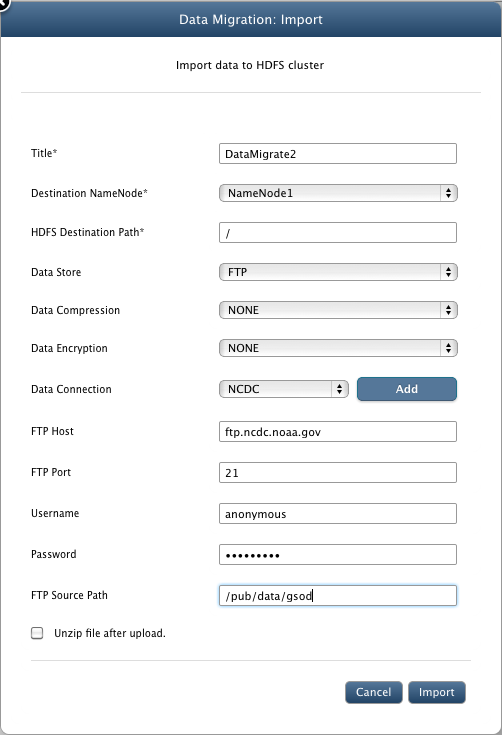
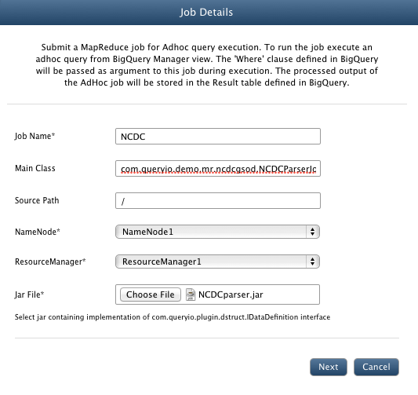
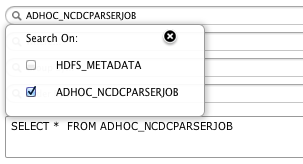

NCDC Weather Data : AdHoc - Content Processing
In this chapter
This chapter explains about importing NCDC weather data and querying it using mapreduce job.
Importing NCDC Weather Data
NCDC (National Climate Data Center) data consist of weather related from 1929 to 2013.
You can import this data through FTP service of QueryIO.
Go to Data > Data Import/Export and click "Import". FTP Import details are :
- Host: ftp.ncdc.noaa.gov
- Port: 21
- User: anonymous
- No password is required for anonymous user.
- FTP Source Path: /pub/data/gsod

Import process will take multiple hours to complete. In case you need to test with lesser number of files, Import data for a particular year rather than all the data.
Provide FTP Source Path as /pub/data/gsod/2012 or /pub/data/gsod/2013.
NCDC MapReduce Job with AdHoc Analytics Support
Following are the steps for executing NCDC MapReduce job:
- Go to Data > AdHoc - Content Processor tab and click Add.
- In the Job Name textbox, enter NCDCJob.
- In the Main Class textbox, enter the class name for your parser. For CSV parser, enter com.queryio.demo.mr.ncdcgsod.NCDCParserJob.
- In the Arguments textbox, you can specify any arguments that you want to pass to the main class of the job.
- The format for the argument is: <input-folder> [<result-table-name>] [<column1=value1> <column2=value2> ... ]
- Arguments for ad hoc querying NCDC job is : [ / ]
- Select NameNode and ResourceManager to be linked with job.
- Select $INSTALL_HOME/demo/NCDCAdHocJob.jar file.
- For NCDC parser job, we do not need to add any dependency libraries or native files.
- Click Save to add job.

- Go to Analytics > Query Designer
- There will be a new ADHOC_NCDCPARSERJOB table added in the FROM section.

- Result Table : It displays name of the table in which result of the job execution will be saved in database. It can be manually changed.
- To provide filter expressions, use WHERE block. Select the attribute to be filtered and specify expression value through UI.
- Click "View" to execute query.
- Job will be automatically executed and result is displayed accordingly.
- Once the query has executed, <Result Table> will be added to your FROM list and can be used further for querying.
Copyright © 2017 QueryIO Corporation. All Rights Reserved.
QueryIO, "Big Data Intelligence" and the QueryIO Logo are trademarks
of QueryIO Corporation. Apache, Hadoop and HDFS are trademarks of The Apache Software Foundation.